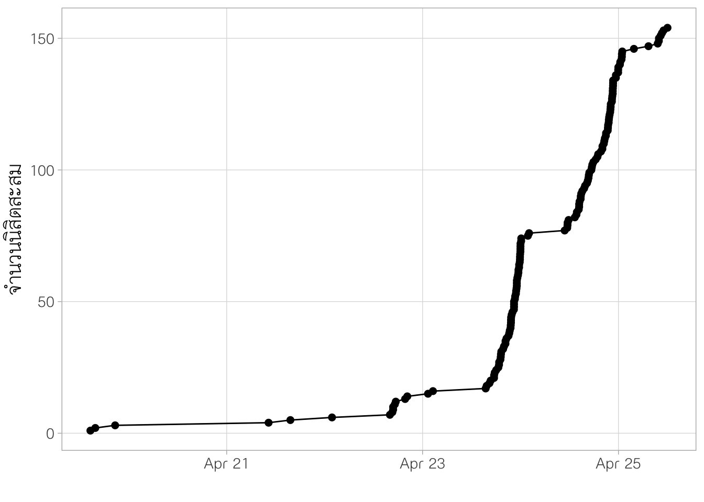
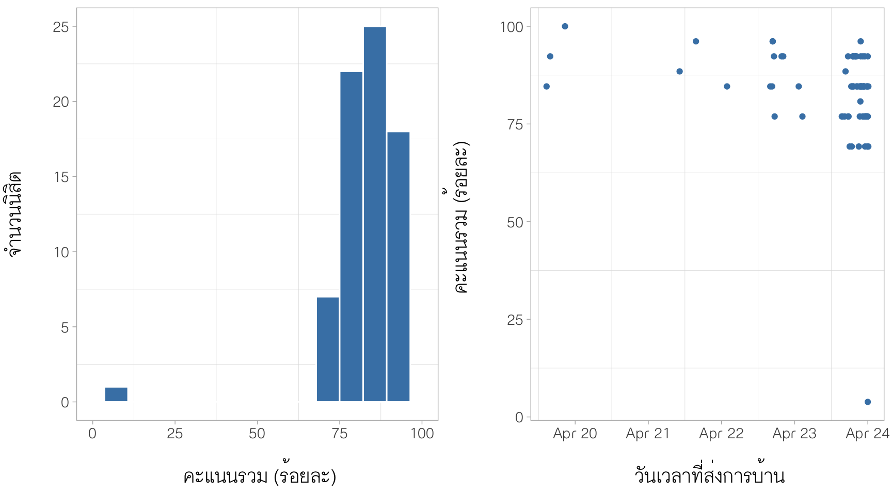
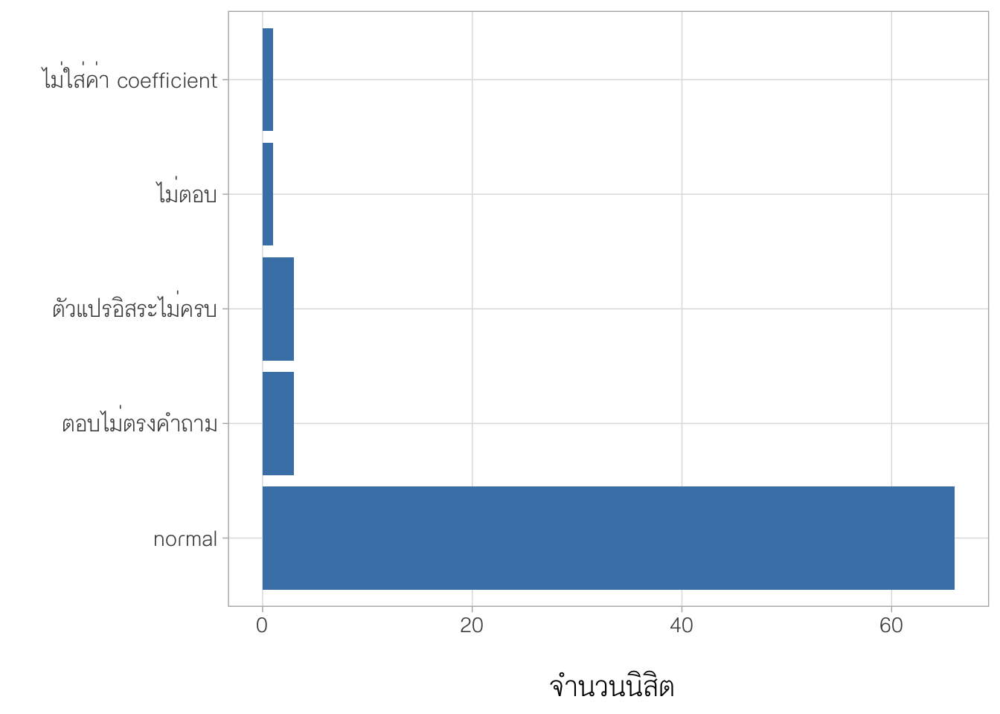
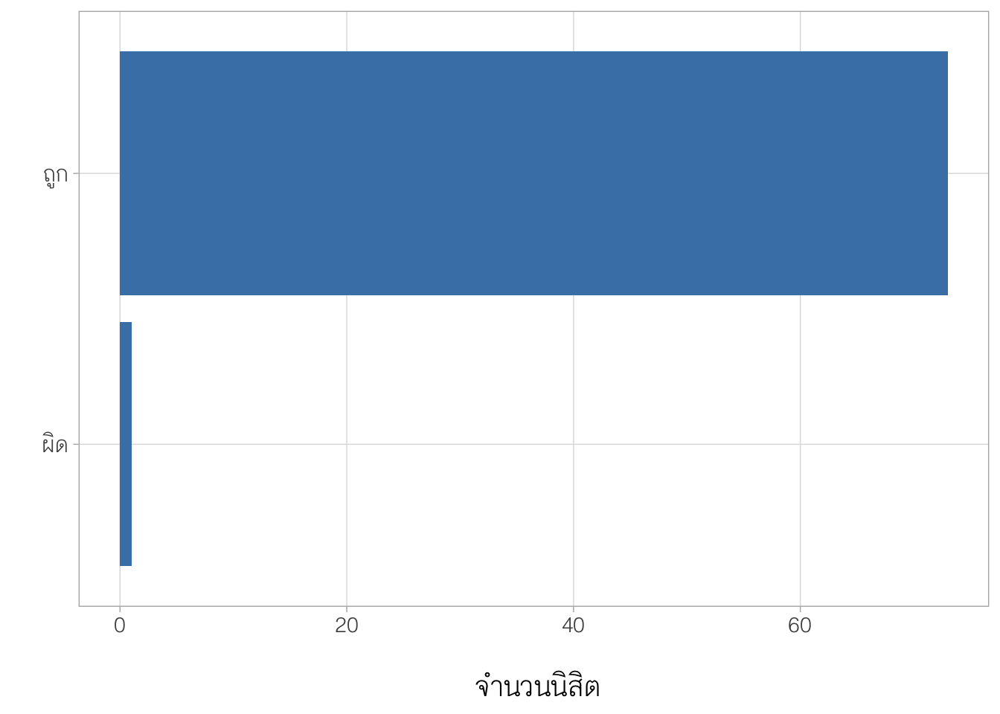
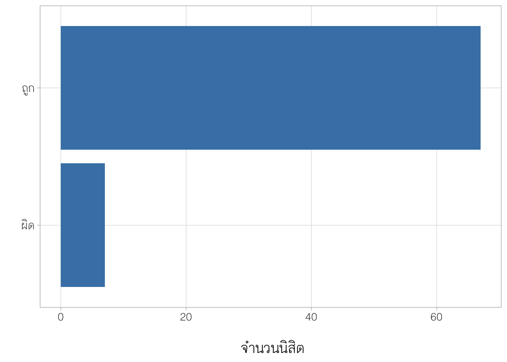
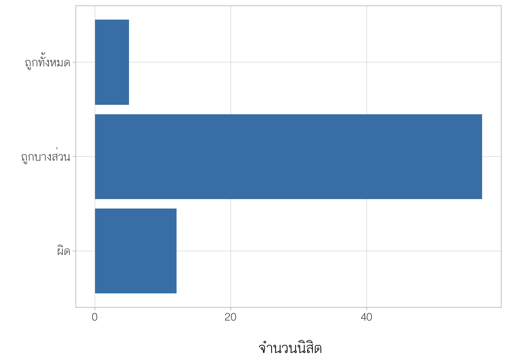
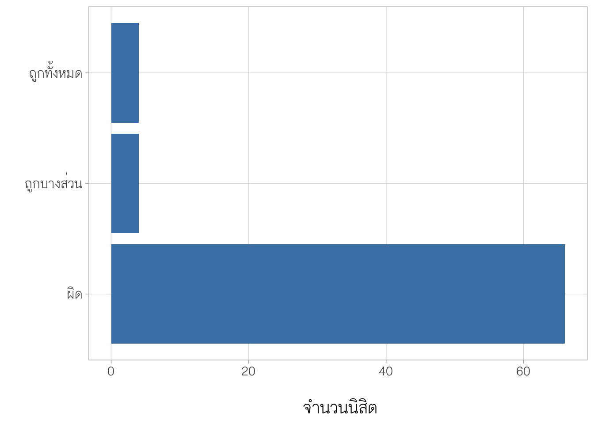
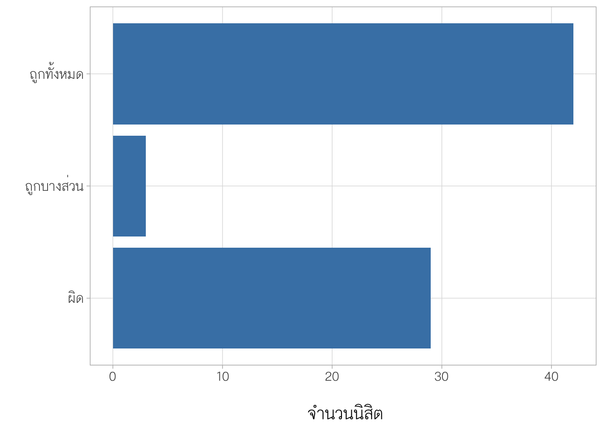
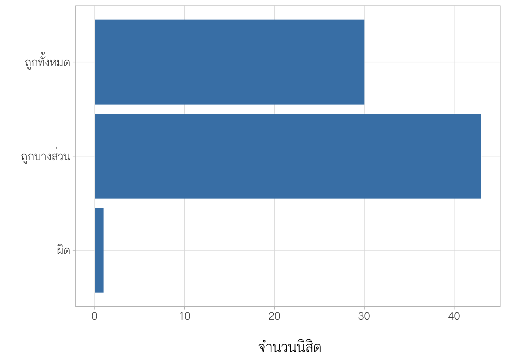
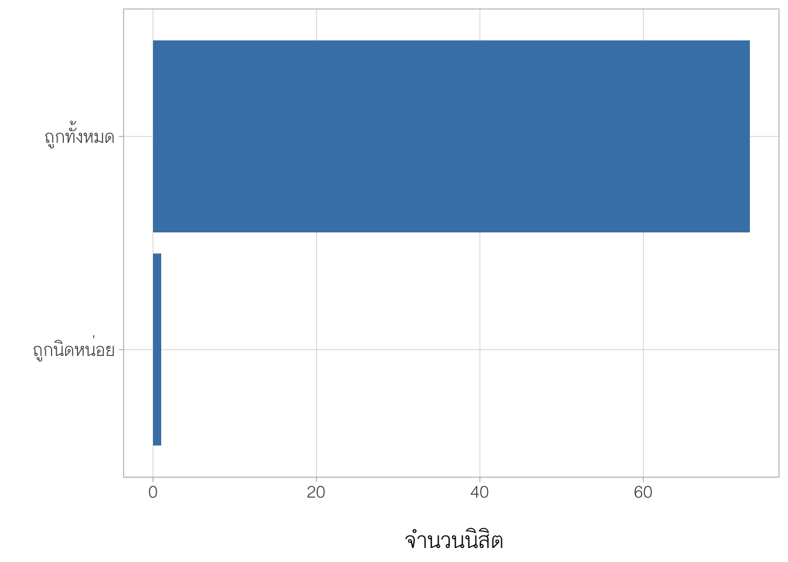

1. ภาพรวมของการทำกิจกรรมการบ้าน Multiple Regression
ผลการวิเคราะห์ส่วนนี้แสดงภาพรวมในการทำกิจกรรมการบ้านของนิสิต ประกอบด้วยผลการวิเคราะห์แนวโน้มการเข้ามาทำกิจกรรม และคะแนนกิจกรรมการบ้านในภาพรวมของนิสิต รายละเอียดมีดังนี้
1.1 แนวโน้มการเข้ามาทำการบ้านเรื่อง Multiple Regression
update วันที่ 25 เมษายน 2566 เวลา 12:00 น. มีนิสิตเข้ามาทำการบ้านแล้วจำนวน 155 คน
1.2 ภาพรวมของคะแนนการบ้าน
update 24 Apr 2023
นิสิตที่เข้ามาทำการบ้านมีคะแนนเฉลี่ยคิดเป็นร้อยละ 82.22 (SD = 12.07) โดยมีนิสิตมากกว่าร้อยละ 99 ที่มีคะแนนการบ้านสูงกว่าร้อยละ 75
| n | mean | sd | min | q1 | q2 | q3 | max |
|---|---|---|---|---|---|---|---|
| 74 | 82.22453 | 12.07403 | 3.846154 | 76.92308 | 84.61538 | 91.34615 | 100 |

2. เฉลยการบ้าน
2.1 จงเขียนสมการถดถอยของการวิเคราะห์ในสถานการณ์ข้างต้น
จากตาราง coefficient สมการถดถอยที่ได้คือ
\(\hat{mathach} = 13.909 + 5.002 ses - 0.024 p.female - 0.827 stressclim\)

ผลการวิเคราะห์คำตอบของนิสิตพบว่า นิสิตส่วนใหญ่สามารถตอบได้อย่างถูกต้อง

2.2 upload residual plot

ผลการวิเคราะห์คำตอบของนิสิตพบว่า นิสิตส่วนใหญ่สามารถตอบได้อย่างถูกต้อง


2.3 upload Heteroskedasticity

ผลการวิเคราะห์คำตอบของนิสิตพบว่า นิสิตส่วนใหญ่สามารถตอบได้อย่างถูกต้อง


2.3 upload normality test

ผลการวิเคราะห์คำตอบของนิสิตพบว่า นิสิตส่วนใหญ่สามารถตอบได้อย่างถูกต้อง


2.4 upload Collinearity Statistics

ผลการวิเคราะห์คำตอบของนิสิตพบว่า นิสิตส่วนใหญ่สามารถตอบได้อย่างถูกต้อง


2.5 สมการถดถอยที่ประมาณได้มีปัญหาละเมิดข้อตกลงเบื้องต้นด้านใดบ้าง (ตอบได้มากกว่า 1 ข้อ)
คำตอบ: ไม่พบหลักฐานว่ามีการละเมิดข้อตกลงเบื้องต้น
ผลการวิเคราะห์คำตอบของนิสิตพบว่าส่วนใหญ่สามารถตอบได้อย่างถูกต้อง

2.6 สมการถดถอยที่ประมาณได้มีความเหมาะสมที่จะใช้ทำนาย/อธิบายความสัมพันธ์ที่พบในข้อมูลหรือไม่ เพราะเหตุใด
คำตอบ : เหมาะสม ด้วยเหตุผล 2 ประการ ประการแรก คือไม่พบหลักฐานว่ามีการละเมิดข้อตกลงเบื้องต้นของการวิเคราะห์การถดถอย และประการที่สอง ค่าสัมประสิทธิ์การตัดสินใจของสมการถดถอยที่ประมาณได้มีค่าเท่ากับ 0.697 แสดงว่าสมการสามารถอธิบายความผันแปรใน mathach ได้คิดเป็นร้อยละ 69.7 ซึ่งอยู่ในระดับที่สูง
ผลการวิเคราะห์คำตอบของนิสิตพบว่า ส่วนใหญ่สามารถตอบได้อย่างถูกต้องบางส่วน
responses %>%
mutate(result3 = factor(result3, labels=c("ผิด","ถูกบางส่วน","ถูกทั้งหมด")))%>%
ggplot(aes(x = result3))+
geom_bar(fill = "steelblue")+
theme_light()+
theme(text = element_text(family="ChulaCharasNew",
size = 16),
panel.grid.minor = element_blank())+
coord_flip()+
ylab("\n จำนวนนิสิต")+
xlab(" ")
2.7 นักวิจัยสามารถใช้การวิเคราะห์การถดถอยในข้างต้นเพื่อสร้างข้อสรุปอ้างอิงไปยังประชากรของโรงเรียนในเขตพื้นที่ดังกล่าวได้หรือไม่ เพราะเหตุใด
คำตอบ : จากสถานการณ์ที่กำหนดพบว่า นักวิจัยมีการใช้กระบวนการสุ่มเพื่อให้ได้มาซึ่งตัวอย่างของโรงเรียนภายในเขตพื้นที่ A และจากผลการตรวจสอบข้อตกลงเบื้องต้นไม่พบว่ามีการละเมิดข้อตกลงเบื้องต้น (โดยเฉพาะในด้านการแจกแจงแบบปกติ (normality) ของความคลาดเคลื่อนของสมการถดถอย) ดังนั้นจึงสามารถใช้ผลการวิเคราะห์ที่ได้เพื่อสร้างข้อสรุปอ้างอิงไปยังประชากรของโรงเรียนในเขตพื้นที่ A
ผลการวิเคราะห์คำตอบของนิสิตพบว่า ส่วนใหญ่ยังไม่สามารถตอบได้ถูกต้อง

ตัวอย่างคำตอบที่ไม่ถูกต้อง
| text4 |
|---|
| ได้ จากการทดสอบสมมุติฐานพบว่าค่า p value มีค่าน้อยกว่า .05 ทำให้ปฏิเสธสมมุติฐานหลักนั่นก็คือ เมื่อกำหนดให้ตัวแปรอิสระ 2 ตัวคงที่แล้วพิจารณาตัวแปรหนึ่ง ๆ นั้นพบว่ามีแนวโน้มที่จะเพิ่มขึ้นหรือลดลงอย่างมีนัยสำคัญทางสติถิ |
| ได้เพราะมีRscore อยู่ที่69.7% |
| ได้ เพราะ เมื่อพิจารณาตาราง Model Coefficients – Mathach พบว่าตัวแปรอิสระทุกตัวมีค่า p < .05 จึงปฏิเสธสมมุติฐานหลัก H0 ทำให้ Ses, P.female และ Stressclim มีความสัมพันธ์กับ Mathach ดังนั้นสามารถใช้การวิเคราะห์การถดถอยในข้างต้นเพื่อสร้างข้อสรุปอ้างอิงไปยังประชากรของโรงเรียนในเขตพื้นที่ดังกล่าวได้ |
| ได้ เพราะ เมื่อพิจารณาตาราง Model Coefficients – Mathach พบว่าตัวแปรอิสระทุกตัวมีค่า p < .05 จึงปฏิเสธสมมุติฐานหลัก H0 ทำให้ Ses, P.female และ Stressclim มีความสัมพันธ์กับ Mathach ดังนั้นสามารถใช้การวิเคราะห์การถดถอยในข้างต้น เพื่อสร้างข้อสรุปอ้างอิงไปยังประชากรของโรงเรียนในเขตพื้นที่ดังกล่าวได้ |
| ได้ เพราะ จากการพิจารณาตาราง Model Coefficients – Mathach จะได้ว่าตัวแปรอิสระทุกตัวมีค่า p < .05 จึงปฏิเสธสมมุติฐานหลัก H0 ทำให้ Ses, P.female และ Stressclim มีความสัมพันธ์กับ Mathach ทำให้สามารถใช้การวิเคราะห์การถดถอยในข้างต้นเพื่อสร้างข้อสรุปอ้างอิงไปยังประชากรของโรงเรียนในเขตพื้นที่ดังกล่าวได้ |
| ได้ เพราะมีประสิทธิภาพในการทำนายโดยสุ่มตัวอย่างจากค่าเฉลี่ยนักเรียนในโรงเรียน และดูค่า P-Value เพื่อจะอนุมานอ้างอิงไปยังประชากรของโรงเรียนในเขตพื้นที่ |
| ได้ เพราะ สมการถดถอยที่ประมาณได้มีความเหมาะสมที่จะใช้ทำนายความสัมพันธ์ได้ |
| ได้ เพราะสมการถดถอยที่ประมาณได้ข้างต้น มีความเหมาะสมที่จะใช้ทำนายหรืออธิบายความสัมพันธ์เพื่อสร้างข้อสรุปอ้างอิงไปยังประชากรของโรงเรียนในเขตพื้นที่ดังกล่าว |
| ได้ เพราะ ตัวแปรต้นแต่ละตัวส่งผลต่อตัวแปรตามอย่างมีนัยสำคัญทางสถิติที่ทุกตัวแปร |
| ไม่ได้ เพราะ จากการวิเคราะห์เศษเหลือเป็นการตรวจสอบความเหมาะสมของสมการถดถอย จาก1ใน4ข้อ อีกทั้งยังไม่ได้ศึกษาความเหมาะสมของการนำสมการไปใช้งานตามวัตถุประสงค์ที่กำหนดไว้ |
| ไม่เพราะ ค่า R2 (อาร์สแควร์) ไม่มีความเหมาะสมและตัวแปรในการวิเคราะห์ยังไม่สมเหตุสมผล |
| ไม่เพราะ ค่า R2(อาร์สแควร์)ไม่มีความเหมาะสมและตัวแปร ในการวิเคราะห์ยังไม่สมเหตุสมผล |
| ไม่เพราะ ค่า R2 (อารีสแควร์) ไม่มีความเหมาะสมและตัวแปรในการวิเคราะห์ยังไม่สมเหตุสมผล |
| ได้ เพราะข้อมูลตัวอย่างที่เก็บมานั้นสามารถใช้เป็นตัวแทนของพื้นที่ได้ ทำให้เราสามารถอ้างอิงไปยังประชากรทั้งหมดในพื้นที่นั้นๆ ได้ หากมีตัวอย่างที่มีจำนวนมากพอและมีความเป็นตัวแทนของกลุ่มที่ดี |
| ไม่เพราะ ค่า R2(อาร์สแควร์)ไม่มีความเหมาะสมและตัวแปรในการวิเคราะห์ยังไม่สมเหตุสมผล |
| สามารถใช้สรุปอ้างอิงพอได้ โดยสามารถอธิบายความแปรปรวนในค่าเฉลี่ยคะแนนผลสัมฤทธิ์ทางการเรียนวิชาคณิตศาสตร์ของนักเรียนในโรงเรียนคิดเป็นร้อยละ 69.7 |
| ไม่เพราะค่า R2 ไม่มีความเหมาะสมเเละตัวเเปรในการวิเคราะห์ยังไม่สมเหตุสมผล |
| ไม่ เพราะ ค่าR2ไม่มีความเหมาะสมและตัวแปรในการวิเคราะห์ยังไม่สมเหตุสมผล |
| นักวิจัยสามารถใช้การวิเคราะห์การถดถอยในข้างต้นเพื่อสร้างข้อสรุปอ้างอิงไปยังประชากรของโรงเรียนในเขตพื้นที่ดังกล่าวได้ เนื่องจากมีการการเก็บรวบรวมข้อมูลของโรงเรียน โดยสุ่มตัวอย่างที่เพียงพอ จำนวน 160 โรงเรียน จากประชากรโรงเรียนในภูมิภาค A ของประเทศ เเละข้อมูลคะเเนนมีหน่วยเป็นคะแนนมาตรฐาน Z ทั้งนี้ยังมีค่าสัมประสิทธิ์การตัดสินใจมีค่าสูง (R square = 0.679) ซึ่งมีประสิทธิภาพในการทํานายของสมการถดถอย เพื่อสร้างข้อสรุปอ้างอิงไปยังประชากรของโรงเรียนในเขตพื้นที่ดังกล่าว |
| สามารถใช้การวิเคราะห์การถดถอยในข้างต้นเพื่อสร้างข้อสรุปอิงไปยังประชากรของโรงเรียนดังกล่าวได้ เนื่องจากสุ่มตัวอย่างเพียงพอแล้ว (n=160) จากประชากรของโรงเรียนในภูมิภาคA ของประเทศ มีคะแนนมาตรฐาน (z-score) และ มีค่าสปส.การตัดสินใจสูง (R^2=0.679) |
2.8 จงแปลความหมายสัมประสิทธิ์ความชันแบบคะแนนดิบ (raw regression coefficient) ของตัวแปรอิสระ p.female
คำตอบ : เนื่องจาก p.female คือร้อยละของของนักเรียนเพศหญิงในโรงเรียน และสัมประสิทธิ์ความชันของตัวแปรอิสระดังกล่าวมีค่าเท่ากับ -0.024 ดังนั้นสามารถแปลความหมายความชันดังกล่าวว่า เมื่อกำหนดให้ตัวแปรอิสระตัวอื่น ๆ คงที่ หากโรงเรียนมีนักเรียนเพศหญิงเพิ่มขึ้นร้อยละ 1.00 ผลสัมฤทธิ์ทางการเรียนคณิตศาสตร์ของโรงเรียนมีแนวโน้มลดลงโดยเฉลี่ย 0.024 คะแนน
ผลการวิเคราะห์คำตอบของนิสิตพบว่า

ตัวอย่างคำตอบที่ไม่ถูกต้อง
| text5 |
|---|
| ร้อยละของนักเรียนเพศหญิงในโรงเรียนน้อยกว่าร้อยละของนักเรียนเพศชาย อยู่ที่ 0.0245 |
| เป็นค่าที่ติดลบ -0.0245 |
| เป็นค่าที่ติดลบ - 0.0245 |
| ค่าที่ติดลบ -0.0245 |
| - เมื่อกำหนดให้ ค่าเฉลี่ยคะแนนเศรษฐานะ (socio-economic status: SES) ของครอบครัวนักเรียนในโรงเรียน(ses) และ ร้อยละของนักเรียนเพศหญิงในโรงเรียน (p.female) คงที่ หากบรรยากาศในห้องเรียน(stressclim)เพิ่มขึ้น 1 คะแนน ค่าเฉลี่ยคะแนนผลสัมฤทธิ์ทางการเรียนวิชาคณิตศาสตร์ของนักเรียนในโรงเรียน(Mathach) จะลดลงโดยเฉลี่ย -0.83 คะแนน - เมื่อกำหนดให้ p.female และ stressclim คงที่ หากค่าเฉลี่ยคะแนนเศรษฐานะ(ses)เพิ่มขึ้น 1 หน่วยมาตรฐาน ค่าเฉลี่ยคะแนนผลสัมฤทธิ์ทางการเรียนวิชาคณิตศาสตร์ของนักเรียนในโรงเรียน(Mathach)จะเพิ่มขึ้นโดยเฉลี่ย 5.00 คะแนน - เมื่อกำหนดให้ ses และ stressclim คงที่ หากร้อยละของนักเรียนเพศหญิงในโรงเรียน(p.female) เพิ่มขึ้นร้อนละ 1 ค่าเฉลี่ยคะแนนผลสัมฤทธิ์ทางการเรียนวิชาคณิตศาสตร์ของนักเรียนในโรงเรียน(Mathach) จะลดลงโดยเฉลี่ย -0.02 คะแนน |
| เป็นค่าติดลบ -0.0245 |
2.9 จากสมการถดถอยข้างต้น นิสิตคิดว่าตัวแปร/ปัจจัยใดที่มีผลต่อคะแนนเฉลี่ยผลสัมฤทธิ์ทางการเรียนทางคณิตศาสตร์ของนักเรียนในโรงเรียนมากที่สุด และน้อยที่สุด เพราะเหตุใด
คำตอบ : พิจารณาจากสัมประสิทธิ์การถดถอยคะแนนมาตรฐาน พบว่า SES และ p.female เป็นตัวแปรที่มีผลต่อ mathach มากและน้อยที่สุดตามลำดับ
ผลการวิเคราะห์คำตอบของนิสิตพบว่า นิสิตส่วนใหญ่ตอบได้ถูกต้อง

2.10 จากสมการถดถอยข้างต้น มีตัวแปรอิสระที่มีผลทางลบต่อคะแนนผลสัมฤทธิ์ทางการเรียนหรือไม่ และมีตัวแปรอะไรบ้าง
คำตอบ : ตัวแปรอิสระที่มีผลทางลบได้แก่ p.female และ stressclim
ผลการวิเคราะห์คำตอบของนิสิตพบว่า นิสิตส่วนใหญ่ตอบได้ถูกต้อง

responses %>%
filter(result7 == 0.5) %>%
dplyr::select(text7)# A tibble: 1 × 1
text7
<chr>
1 มี